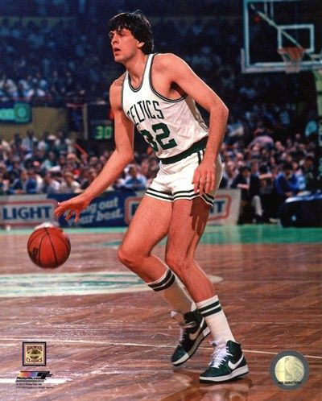

Headline for All-Star 2019
The Los Angeles Lakers' star once again headlines the list of starters for his side of the 68th All-Star Game. He joins Milwaukee’s Giannis Antetokounmpo, the top vote-getter from the Eastern Conference and the heir apparent to his throne as the best player in the East, as captains and the players responsible for choosing sides for the Feb. 17 showcase game at Charlotte’s Spectrum Center.
LeBron James’ All-Star status is concerned
They were Eastern Conference starters together last season, when James was still in Cleveland, but will now have to choose sides in the All-Star player draft this time around as the respective ballot winners from the Eastern and Western Conferences.
Antetokounmpo is joined on the Eastern Conference starters list by Boston’s Kyrie Irving and Charlotte’s Kemba Walker in the backcourt, and Toronto’s Kawhi Leonard and Philadelphia’s Joel Embiid in the frontcourt.
Celtic retire McHale's
In 1994, the Celtics raised Kevin McHale's No. 32 jersey to the rafters.
With his combination of deft low-post footwork, shot blocking and clutch scoring, McHale was a superstar player in the 1980s for the Boston Celtics. The role he played in three championship teams that decade cemented his place in NBA lore and made him a legend with the franchise as well.
On Jan. 30, 1994, that all culminated with the Celtics retiring his No. 32 jersey. Upon his retirement, McHale was the Celtics’ fourth-leading scorer and No. 6 rebounder. In addition, he was a two-time winner of the NBA's Sixth Man Award and a six-time member of either the NBA All-Defensive First or Second Team.
McHale was the best sixth man of his generation at a time when key reserves were becoming fashionable. His scoring improved in each of his first six seasons and was named to the NBA All-Rookie Team in 1980-81.
He teamed with Larry Bird and Robert Parish to form a frontline that was perhaps one of the greatest ever in NBA history.
Pelicans headling of Davis trade request

New Orleans Pelicans star Anthony Davis delivered a shock to the NBA world on Monday with news of his desire to be traded. A day later, the Pelicans may start hearing all kinds of offers for the All-NBA big man, but it seems they're not going to rush to make a move.Wojnarowski reports the Los Angeles Lakers' braintrust of president Magic Johnson and GM Rob Pelinka plan to make an aggressive push for Davis before the trade deadline. The Lakers are expected to talk to the Pelicans soon about a possible trade, league sources told Wojnarowski. To acquire Davis, the Lakers would likely have to part with a combination of future Draft picks and young assets such as Lonzo Ball, Brandon Ingram, Kyle Kuzma and Josh Hart.
On Monday, the Pelicans issued a statement that acknowledged Davis' trade request, but also made it clear they will deal him when it suits the team best.
"This past weekend, Anthony Davis’ representatives informed us that Anthony does not wish to sign a contract extension with our team and subsequently has requested a trade," the Pelicans' statement said. "Although we are disappointed in this decision, our organization’s top priority is to bring an NBA championship to our city and fans and build our team for long-term success.
James ramps up work at practice
LeBron James continues to make progress in his groin injury rehabilitation work. While the Los Angeles Lakers aren't quite ready to declare James ready to play yet, his status is trending toward a return to the court.
After Monday's practice, Lakers coach Luke Walton said the team would take a "day-to-day" approach with James' availability (he is listed as out for tonight's game against the Philadelphia 76ers). Additionally, several news outlets reported the Lakers' star could suit up Thursday against the LA Clippers
Walton said that James is moving well, getting into the paint and shooting jumpers, if not driving aggressively to the rim and looking for tomahawk jams. When the media was let in after Monday's practice was over, James was seen nailing 3-pointers around the line and then from 5 to 10 feet beyond it
The 34-year-old James has been out since Christmas due to the most significant injury of his 16-year NBA career. He had never missed more than 13 games in an entire season, but missed his 16th consecutive game on Sunday. James practiced with his teammates Saturday at their training complex, but won't return this weekend. The Lakers' next game after that is Tuesday at home against Philadelphia. James was selected this week to be a starter and a team captain in the NBA All-Star Game in Charlotte on Feb. 17.
Harden on a roll, revives Houston
Pelicans vs. Rockets
HOUSTON (AP) James Harden has been scoring at a pace not seen since Wilt Chamberlain in the 1960s. He doesn't want to talk about it, of course. He never does, whether things are going well or not. But it is clear he is enjoying this because his scoring outburst has coincided with Houston climbing the standings, back among the top teams in the Western Conference after an early-season slump. "I love to hoop," he said. "I love to just be out there and the grind."
In 13 games during January, last season's MVP is averaging 44.1 points.
About Last Night: Harden's streak rolls on
He scored 40 pointsin
Houston's win over Orlando on Sunday night to extend his stretch of consecutive 30-point games to
23, the
fourth-longest streak in NBA history behind three such streaks by Chamberlain. In 13 games this
month, last season's
MVP is averaging 44.1 points. He has scored at least 40 points in eight games in January, including
two 50-point games
and a franchise-record 61 in a win over the Knicks.
"It's remarkable," teammate Eric Gordon said. "I've been around a lot of big-time players and he's for sure the best scorer I've ever been around and he does it so easily. It's a credit to him. He's one of the best scorers ever."
Harden led the league in scoring last season for the first time by averaging 30.43 points a game, but injuries to Chris Paul and Clint Capela have forced him to carry an even bigger load this year and he's averaging in NBA-best 36.33. If he keeps this pace up for the rest of the season he would be the first player to average more than 36 points a game since Michael Jordan averaged 37.09 in in 1986-87. If the season ended today, Harden would have the seventh-highest scoring average in NBA history behind that season by Jordan, which ranks fifth, and five seasons by Chamberlain.